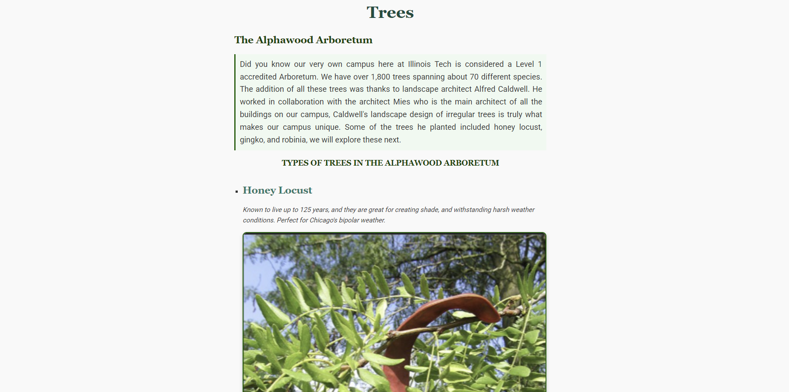

Summary
Motivated and driven 5th year ITM undergraduate student with strong leadership and customer service skills. Passionate about databases and cybersecurity, eager to apply and expand my technical expertise in a hands-on, real-world environment.
Education
BS in Information Technology and Management
Illinois Institute of Technology, Chicago IL
Expected Graduation, Dec 2025
Skills
- PROGRAMMING LANGUAGES: SQL| HTML|Python|Java|Linux
- TECHNOLOGY: Tinkercad|Eclipse|VS Code|Oracle VirtualBox|Notepad++
- OTHER: Proficient in MS Office suite | Google Suite
- LANGUAGES: English |Urdu
Experience
Interlibrary Loan Department, Galvin Library
AUG 2021 - May 2025
- -Complete Lending and Borrowing Requests
- -Scan physical books to update online database
- -Search stacks for Journals and Periodicals
Exploration Space Lead, Galvin Library
AUG 2023 - May 2025
- -Monitor 3d printer usage
- -Aid in any technical difficulties such as calibration, infill suggestions, and Filament changes
- -Oversee projects and offer design advice to ensure stability of the print
Projects
IIT Tree Website
A simple website talking about Illinois Tech's very own Arboretum and the types of trees on campus. The website was styled using some CSS techniques
